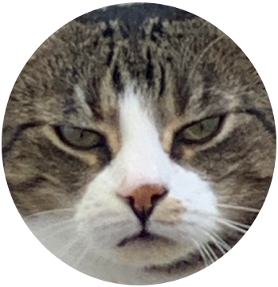

In der heutigen Zeit, wo so viele Leute unter Stress leiden, ist eine Katze ideal: Die Beschäftigung mit einer Katze kann den Blutdruck senken und die Herzfunktion verbessern. Jeannie Lerch Davis von der Gesundheits-Website WebMD bestätigt, dass Tierhalter niedrigere Cholesterin- und Triglycerid-Werte haben. Und wenn das noch nicht Grund genug ist, Katzen zu mögen, dann sollte man wissen, dass die Katze uns vorbehaltlos liebt, ohne dich zu beurteilen, und dass menschlicher Kontakt ihr guttut. Kein Wunder also, dass Katzenhalter so gut drauf sind!
Katzen brauchen zwar nicht ausgeführt zu werden, aber ein bisschen spielen kann nicht schaden. Gehe mit einem Laserpointer durch den Raum oder mit einem Leckerli an einer Angelrute umher und erlebe, wie begeistert die Katze versucht, den Lichtpunkt oder die Belohnung zu erhaschen.
Katzenhalter sind außerdem gesünder und müssen weniger oft zum Arzt als ihre haustierlosen Zeitgenossen. In manchen Reha- Einrichtungen und Krankenhäusern gibt es sogar "Therapie-Katzen", weil Menschen, die Katzen in ihrer Umgebung haben, sich stärker eingebunden fühlen und schneller genesen. Fest steht, dass wer ein Haustier in seine Familie aufnimmt, etwas für sein körperliches und seelisches Wohlbefinden tut. Noch ein Grund mehr, Zuneigung zu Ihrem pelzigen Freund zu empfinden.